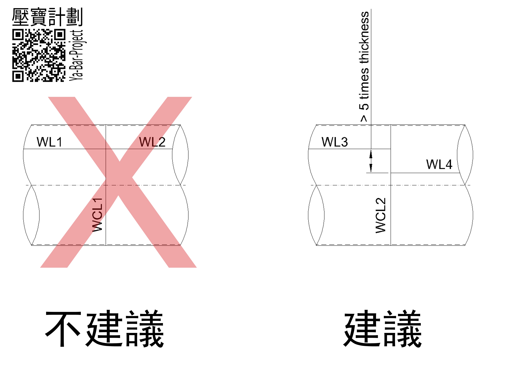

焊道間距 (Weld Spacing) Decision Node
前置條件 (Precondition)
- 板厚 t
- 材料 MDMT
- NDT 等級（RT1/UT）
決策節點 (Decision Node)
- 問題：相鄰焊道間距 < 5t？
- 說明：Full Penetration Weld 過近會影響檢測與修補

分支 1：可調整設計
- 增加焊道間距至 ≥ 5t
- 調整板材排版
分支 2：無法達到 5t
措施 1：提升檢測能力
- RT → UT 或 phased array UT
- 增加複檢次數
措施 2：焊接策略
- 分段 / Staggered Welding
- 控制焊接順序
措施 3：檢測可達性設計
- 預留 UT 掃描空間（Inspection Window）
措施 4：厚板補充考量
- t > 38 mm → 評估 PWHT 影響
案例 (Failure Case)
- 板厚 20 mm
- 焊道間距 2t
- RT 無法判讀 → 全部焊道 gouging
- 工期與成本增加
參考文件 (Reference)
- ASME Sec.VIII Div.1, 2025 Edition
- CNS 9788
相關節點 (Related Nodes)
- PWHT Decision Node
- NDT Decision Node